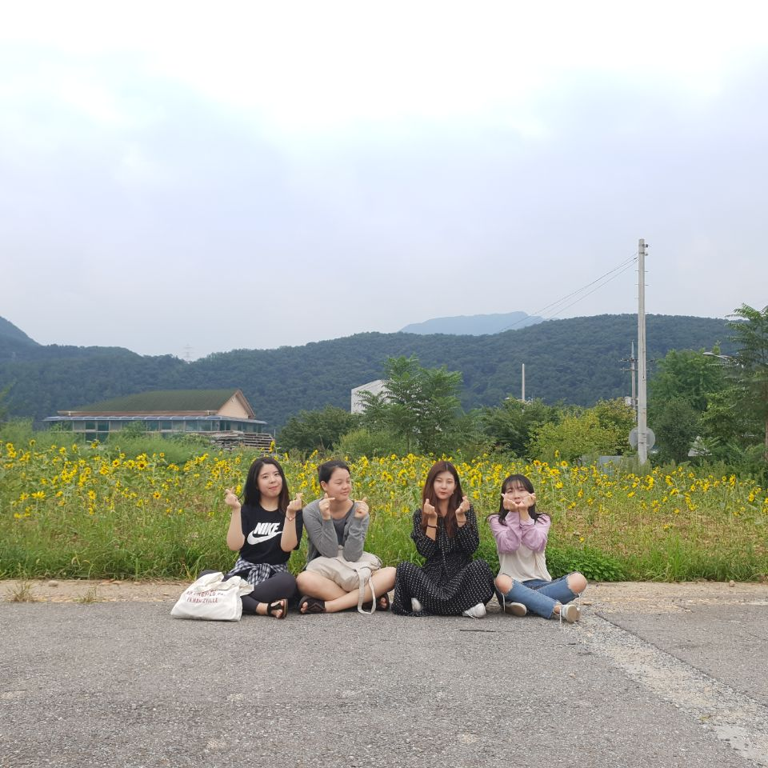

김은빈은 1998년 2월 1일 생으로, 넷 중 유일하게 1998년생이다. 넷중 가장 늦게 태어났는데 키가 가장 크다. 168-170cm로 추정된다. 하지만 족보대로라면 우리가 언니임이 분명하기에 앞으로는 우리에게 언니대접을 해주면 좋겠다.
김은빈에게는 아주 사랑스러운 강아지 초롱이가 있다. 볼 때마다 생각했지만 투게더 아이스크림같이 털색깔이 갈색과 흰색으로 조화롭게 섞여있다. 가끔 퍼먹는 시늉을 했다. 초롱이는 아주 어른스러운 애기다. 김은빈 바라기로 은빈이가 가는 곳이면 어디든 쫓아다닌다. 언제나 보고싶다.
가성비 좋은 제품이나 맛집을 자주 알아온다. 이번에는 은빈이가 산 팬티에 영업당해 공구하였다. 본인도 오늘 처음 입어보았는데 엄청 편하다. 앞으로 이런 좋은 물건을 더 발굴해주면 좋겠다.
김은빈은 음악적 취향이 남다르다. 고등학생때는 뉴에이지를 자주 들었으며 만난지 얼마 되지 않았을 때는 옆에 내가 있는데도 이어폰을 꽂아서 나를 싫어하는건가.. 라는 생각을 한 적이 있었는데 원래 이런 애였다. 현재는 연어처럼 혼자 시대를 거슬로 올라가 2000년대 발라드나 댄스음악을 즐겨듣는다.
더하여 김은빈은 네 친구의 모임이나 여행을 주도한다. 생각해보면 거진 99.9%의 모임이 김은빈의 주도하에 이루어졌다. 아마 은빈이의 역할이 없었다면 우리넷은 5년에 한번 만날지도 모른다. 이 점에 대하여 귀하의 노고에 감사드립니다.
